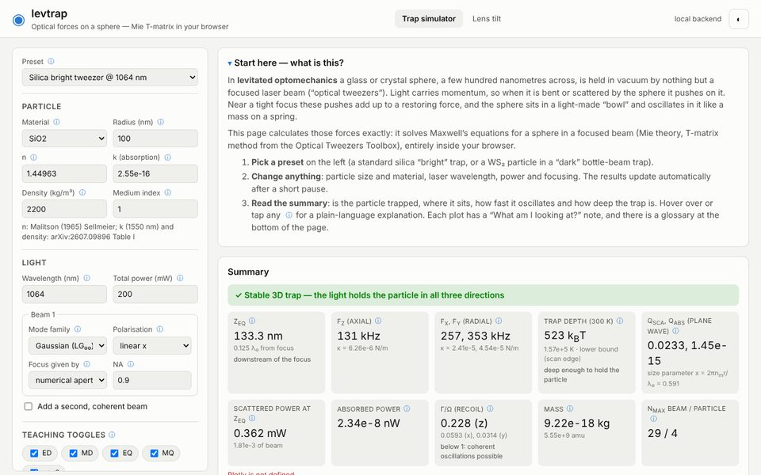
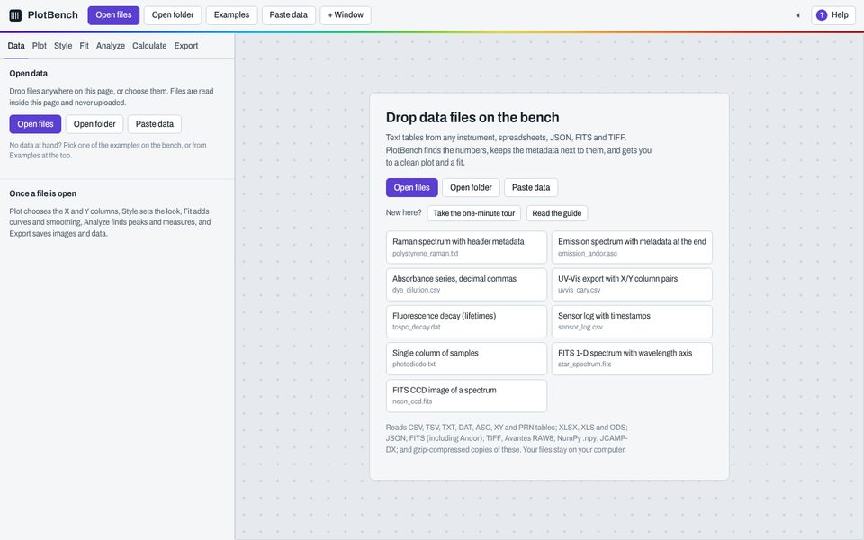
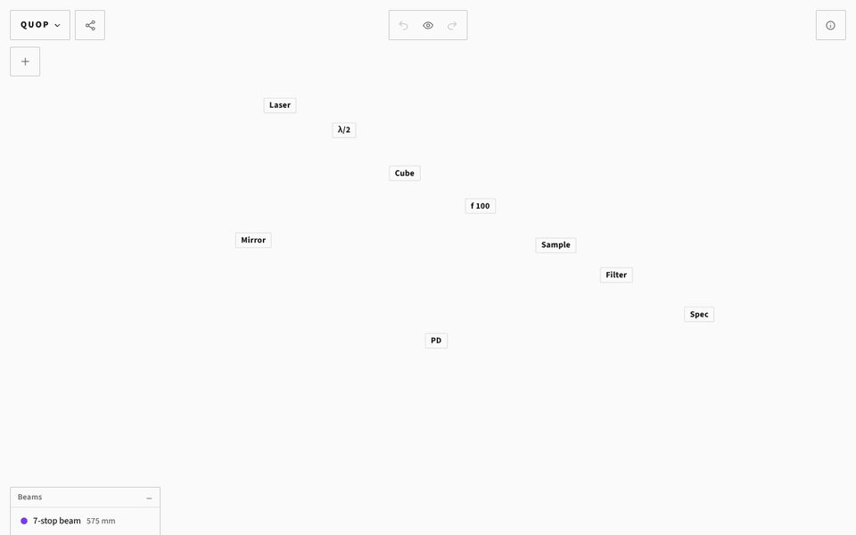

Resources
Software we wrote for our own lab work and share openly. The code is on GitHub at github.com/macroscopicquantumoptics; issues and pull requests are welcome.
Tools
-
levtrap
Optical forces on a sphere in a focused laser beam, calculated in the browser. It finds where a particle is trapped, the trap frequencies and depth, scattered and absorbed power and photon-recoil heating, for Gaussian, LG and HG beams. The physics is a Python port of part of the Optical Tweezers Toolbox and runs through Pyodide; a second page traces a tilted asphere and feeds the aberrated focus into the same force calculation.

-
PlotBench
Plot and fit data from almost any table file: CSV, spreadsheets, JSON, FITS and TIFF, among others. It finds the numbers in a file, keeps the metadata next to them, and gets you to a clean plot and a fit. Files are read inside the page and never uploaded.

-
QuOp Tabletop
A virtual optical table for sketching experimental setups: drop lasers, waveplates, lenses, mirrors and detectors on the table and trace the beams between them. It is part of QuOp, our lab web app, which also has quick calculators and plotters for oscilloscope CSV and spectrometer FITS files.
